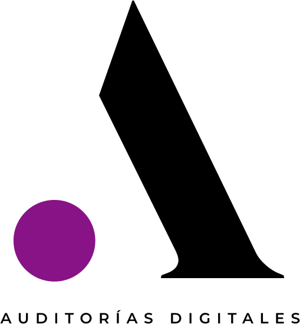

01 / FUNDAMENTOS
IA Essential
Entender la IA antes de usarla.
- Fundamentos y herramientas
- Seguridad y buenas prácticas
- Prompts esenciales

Diseñamos cada sesión alrededor de un resultado concreto. Sin demos vacías: casos, prompts y flujos que el equipo puede usar desde el día siguiente.
Tres niveles para convertir curiosidad en capacidad real.
Entender la IA antes de usarla.
Convertir IA en productividad.
Liderar la adopción empresarial.
Antes de empezar, alineamos el contexto y las expectativas del equipo.
Conceptos, demostraciones y ejemplos que responden a casos reales.
Trabajo hands-on con prompts, situaciones y decisiones del cliente.
Conclusiones, próximos pasos y materiales para seguir avanzando.
Material digital y biblioteca de prompts.
Casos aplicados a la industria de tu organización.
Guía de buenas prácticas y uso responsable.
Certificado de participación y resumen ejecutivo.